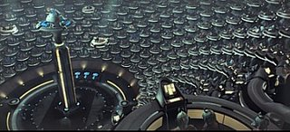

| Profil | |
|---|---|
| Origine | Eternité |
| Sexe | Homme |
| Profil | Guilde |
| Coalitions | |
| Mondes Unis (co-fondateur) | |

L'ARRIVÉE AU POUVOIR:
Neil Jors naquit dans la ville sous-marine d'Umerade, en Austrasie, sur Essara. Né d'un père pratiquant le commerce inter-cités, et d'une mére sénatrice, Neil passa son enfance entre les chiffres et la gestion à Umerade et la politique à Omégara. Lors de son entrée à l'université d'Omégara, il dut faire le choix entre des études basées sur le commerce, des études de sciences politiques et des études scientifiques. Il tenta les études de sciences politiques, ayant passé la moitié de son enfance dans les couloirs du Sénat Essaran.
 Bâtiment du Sénat à Omégara
Bâtiment du Sénat à Omégara
Ses études furent un succès, et il sortit premier de sa promotion, à l'âge de 21 ans. Il fut élu sénateur, et fit un mandat de 4 ans comme représentant d'Umerade. A la fin de son mandat, il quitta le sénat pour intégrer les rangs des technocrates, où il gravit un à un les échelons hiérarchiques. 5 ans après sa sortie de l'université, le dirigeant Thenat Xilef Thrass meure de vieillesse. Des élections sont donc organisées afin d'élire un nouveau chef d'Etat. Après une dure campagne face à la candidate Adosienne Laura Nils, Neil est élu dirigeant d'Essara, poste qu'il occupe toujours depuis.
UNE SANTE FRAGILE :
La quantité de travail à fournir en tant que dirigeant était telle, que Neil Jors dut trouver une solution. Il décida d'utiliser des produits chimiques dans le but d'améliorer ses capacités. Les morphéblocants et autres accélérateurs cérébraux permirent un temps au dirigeant d'Essara d'accomplir plus de travaille qu'une demi-douzaine de secrétaires et d'assistants. Il pouvait ainsi remplir la totalité de ses travaux quotidiens (soit un totale de 30-35 heures de travail) en 20 heures. Les 4 dernières heures lui servant à récupérer de sa dure journée (la durée d'une révolution solaire dans le ciel Essaran est de 24 heures).
Durant un temps, tout se passa bien. L'Empire prospéra, Jors tenant le coup sous la cadence infernale que lui imposait sa fonction. Il fut même élu gouverneur du secteur 4, poste qu'il occupa avec quelques succès durant une trentaine de cycles.


Malheureusement, ce fut à la fin de son mandat de gouverneur que les signes avant-coureur d'un affaiblissement de sa santé apparurent. On sentait Mr. Jors de plus en plus fatigué, comme s'il peinait de plus en plus à accomplir son devoir.
De plus en plus souvent, il s'absentait pendant quelques heures, probablement pour aller dormir et récupérer un peu. La pièce qui jouxtait le célèbre bureau du dirigeant d'Essara avait même était transformée en chambre, à la demande du maitre des lieux.
C'est aussi à cette époque que le complexe 3, situé en face du 5éme complexe de la Cité de Cristal, fut emménagé par l'élite du corps médical. Officiellement, pour centraliser et coordonner les recherches faite à partir des résultats des laboratoires des quatre coins de l'Empire. Mais officieusement pour garder un oeil sur le dirigeant Essaran.

Le complexe 5 de la Cité de Cristal à Omégara, centre du gouvernement de l'Empire sur Essara. La Cité de Cristal comporte 5 complexes identiques sur la colline de l'Ange au cœur d'Omégara.
Neil Jors obtint alors son mandat de chancelier. Place prestigieuse, il est vrai, mais clairement inconfortable pour cet utopiste et éternel optimiste. Les difficultés rencontrées alors furent d'une intensité inimaginable.
La vie quotidienne de Mr Jors devint un combat. Les réunions succédant aux congrès, succédant aux déclarations. Jors était en réalité déchiré entre sa patrie, Essara, et la capitale galactique et pas son biais, Eternité en entier. Son mandat fut finalement relativement décevant. Mis à part certains points, mis en place sans trop de problèmes et satisfaisant à l'époque à peu près tout le monde, le reste fut un échec.
Ce fut aussi un échec du point de vue de sa santé. Miné par les produits qu'il s'administrait pour remplir la totalité de ses tâches, durement éprouvé par les combats incessants de la dure vie de chancelier, Jors démissionna à quelques jours de la fin de son mandat pour raison médicale. Sa santé était devenue chaotique, à un point tel qu'il devait se reposer durant la majeure partie de ses journées. Il avait en outre perdu plusieurs kilos, et semblait des plus pâle de peau. A ce moment, beaucoup d'Essarans se firent du soucis pour leur dirigeant.
Finalement, Mr Jors reprit le dessus et obtint même du Sénat Essaran la permission de prendre quelques vacances. Vacances qu'il décida de passer à Umerade, en compagnie de son ami Gluskab, dirigeant de la Nation du mâtin Abénaquise.